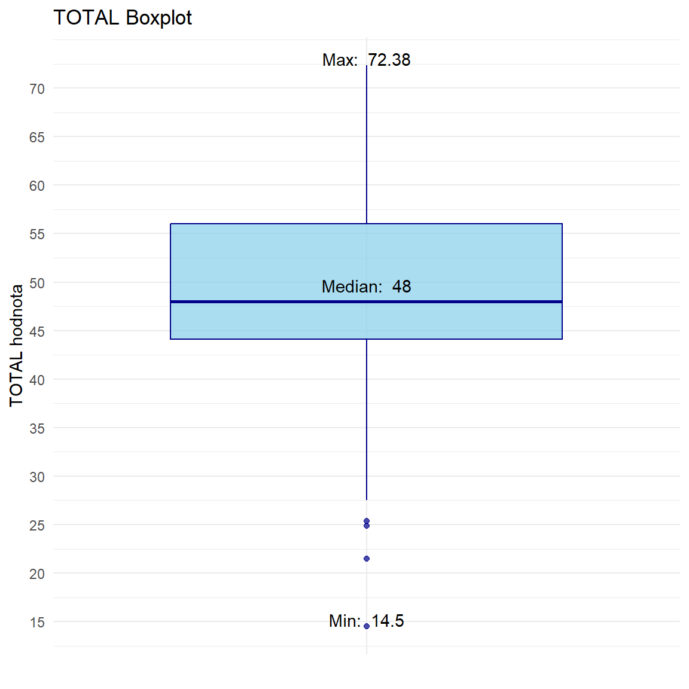
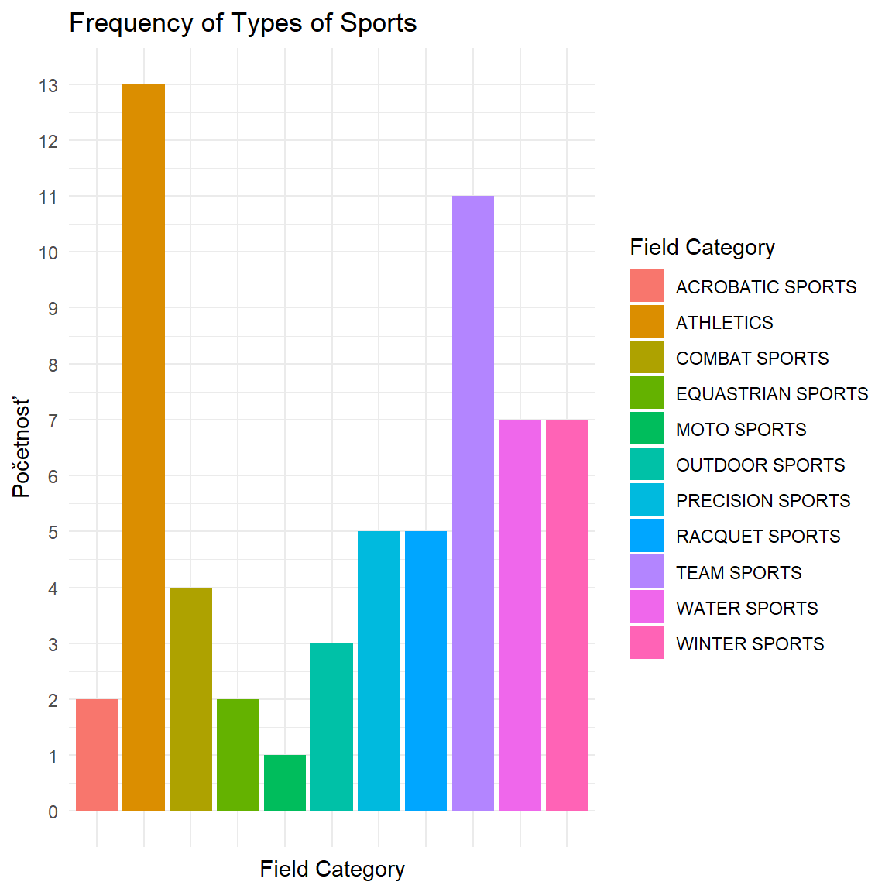
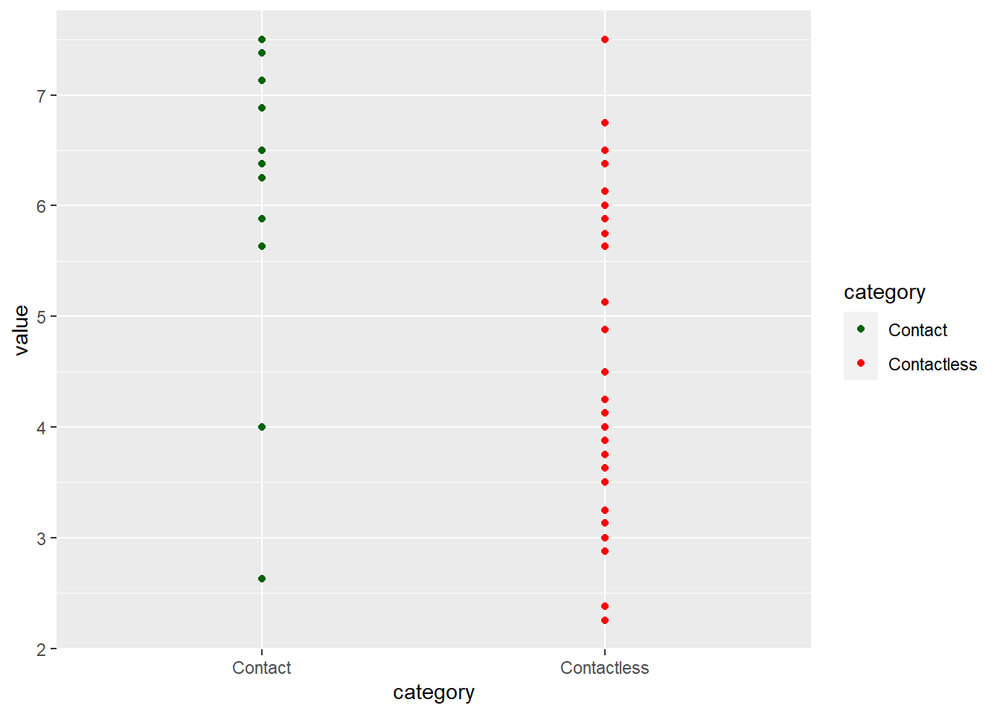
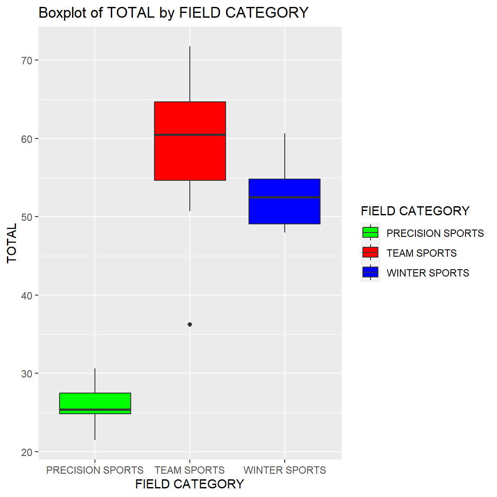

| SPORT | ENDURANCE | STREGTH | POWER | SPEED | AGILITY | FLEXIBILITY | NERVE | DURABILITY | HAND-EYE-CORD | ANALYTIC APTITUDE | FIELD CATEGORY | CONTACT CATEGORY | TOTAL | RANK |
|---|---|---|---|---|---|---|---|---|---|---|---|---|---|---|
| Boxing | 8.63 | 8.13 | 8.63 | 6.38 | 6.25 | 4.38 | 8.88 | 8.50 | 7.00 | 5.63 | COMBAT SPORTS | YES | 72.375 | 1 |
| Ice Hockey | 7.25 | 7.13 | 7.88 | 7.75 | 7.63 | 4.88 | 6.00 | 8.25 | 7.50 | 7.50 | TEAM SPORTS | YES | 71.750 | 2 |
| Football | 5.38 | 8.63 | 8.13 | 7.13 | 6.38 | 4.38 | 7.25 | 8.50 | 5.50 | 7.13 | TEAM SPORTS | YES | 68.375 | 3 |
| Basketball | 7.38 | 6.25 | 6.50 | 7.25 | 8.13 | 5.63 | 4.13 | 7.75 | 7.50 | 7.38 | TEAM SPORTS | YES | 67.875 | 4 |
| Wrestling | 6.63 | 8.38 | 7.13 | 5.13 | 6.38 | 7.50 | 5.00 | 6.75 | 4.25 | 6.38 | COMBAT SPORTS | YES | 63.500 | 5 |
Zadanie Holík
Úvod
Ako projekt na štatistické analyzovanie som si vybral dataset o športoch, ktorý obsahuje zoznam 60 športov a ich fyziologické nároky. Dataset obsahuje 14 premenných, kde 10 z ich obsahujú číselné hodnoty reprezentujúce: vytrvalosť, silu, explozivitu, rýchlosť, obratnosť, flexibilitu, nervovú odolnosť,výdrž silového zaťaženia, kordináciu a analytické schopnosti. 2 premenné obsahujú kategóriu športu a jeho kontaktonsť. Posledné premenné obsahujú celkové hodnotenie športu vypočítané súčtom všetkých predchádzajúcich hodnôt a výslednú hodnotu v rebríčku.
1. Využitím popisnej štatistiky charakterizujte premennú Total. Výsledky zobrazte graficky a popíšte aj použité grafy. Ktorý Field category je v súbore najviac zastúpený?
plot1 <- ggplot(data, aes(x = " ", y = TOTAL)) +
geom_boxplot(fill = "skyblue", color = "darkblue", alpha = 0.7) +
annotate("text", x = 1, y = min(data$TOTAL), label = paste("Min: ", round(min(data$TOTAL), 2)), vjust = 0) +
annotate("text", x = 1, y = median(data$TOTAL)+1, label = paste("Median: ", round(median(data$TOTAL), 2)), vjust = 0) +
annotate("text", x = 1, y = max(data$TOTAL), label = paste("Max: ", round(max(data$TOTAL), 2)), vjust = 0) +
scale_y_continuous(breaks = seq(0, max(data$TOTAL), by = 5)) +
labs(title = "Boxplot of Total", x = " ",
y = "Total value") +
theme_minimal() +
theme(axis.text.x = element_blank(), axis.ticks.x = element_blank())
category_counts <- table(data$"FIELD CATEGORY")
plot_data <- data.frame(Field_Category = names(category_counts), Frequency = as.numeric(category_counts))
plot2 <- ggplot(plot_data, aes(x = Field_Category, y = Frequency, fill = Field_Category)) +
geom_bar(stat = "identity", ) +
labs(title = "Frequency of Types of Sports", x = "Field Category", y = "Frequency", fill = "Field Category") +
scale_y_continuous(breaks = seq(0, max(plot_data$Frequency), by = 1)) +
theme_minimal() +
theme(axis.text.x = element_blank(), axis.ticks.x = element_blank())
par(mfrow=c(1, 3))
plot1
plot2

Z prvého grafu vidíme, že minimálna hodnota v datasete je 14.5, maximálna je 72.38, median je 48, priemerná hodnota je 48.98. Z druhého grafu vidíme, že najviac zastúpená športová kategória je “Athletics” a najmenej “Moto Sports”.
2. Vhodným testom overte na hladine významnosti 0.1, či je Analytic aptitude najviac 4. Porovnajte Analytic aptitude, vzhľadom na to, či ide o kontaktný alebo bezkontaktný šport. Je tento rozdiel štatisticky významný na hladine významnosti 0.01?
distr_test <-shapiro.test(data$`ANALYTIC APTITUDE`) # 0.003 < 0.1 => is not normal distribution
result <- wilcox.test(data$`ANALYTIC APTITUDE`, mu = 4, alternative = "less", conf.level = 0.9)
result$p.value < 0.1 # FALSE => nie je najviac 4[1] FALSEZ testu sme zistili, že hodnoty “ANALYTIC APTITUDE” nie sú normálne rozdelené, preto použijeme neparametrické testy.
vec1 <- data$"ANALYTIC APTITUDE"[data$"CONTACT CATEGORY" == "YES"]
vec2 <- data$"ANALYTIC APTITUDE"[data$"CONTACT CATEGORY" == "NO"]
df <- data.frame(value = c(vec1, vec2),
category = rep(c("YES", "NO"), c(length(vec1), length(vec2))))
shapiro.test(vec1) # p.value < 0.1 => nie je normálne rozdelenie
Shapiro-Wilk normality test
data: vec1
W = 0.84464, p-value = 0.01137shapiro.test(vec2) # p.value < 0.1 => nie je normálne rozdelenie
Shapiro-Wilk normality test
data: vec2
W = 0.93333, p-value = 0.01366result <- wilcox.test(vec1, vec2, alternative = "two.sided", conf.level = 0.99)Warning in wilcox.test.default(vec1, vec2, alternative = "two.sided",
conf.level = 0.99): cannot compute exact p-value with tiesresult$p.value < 0.01 # TRUE => rozdiel je statisticky vyznamny, kontanktný šport má vyššie hodnoty "ANALYTIC APTITUDE" ako bezkontaktný[1] TRUEggplot(df, aes(x = category, y = value, color = category)) +
geom_point() +
scale_color_manual(values = c("YES" = "darkgreen", "NO" = "red"))
HO: Analytic aptitude je najviac 4. H1: Analytic aptitude nie je najviac 4. Pomocou wilcox testu sme zistili, že p-value je menšie ako 0.1, teda zamietame nulovú hypotézu. Teda Analytic aptitude nie je najviac 4. Pri porovnaní Analytic aptitude vzhľadom na to, či ide o kontaktný alebo bezkontaktný šport sme zistili, že rozdiel je štatisticky významný na hladine významnosti 0.01. Z grafu vidíme, že kontaktný šport má vyššie hodnoty “ANALYTIC APTITUDE” ako bezkontaktný.
3. Existuje štatisticky významný rozdiel v premennej Total vzhľadom na Field category (berme do úvahy len team sports, winter sports a precision sports) alebo vzhľadom na to či je Durability pod 5 alebo 5 a viac? Overte vhodným testom a aj graficky. Ak rozdiel existuje, tak medzi ktorými? Existuje aj interakcia medzi premennými?
subset_data <- subset(data, data$"FIELD CATEGORY" %in% c("TEAM SPORTS", "WINTER SPORTS", "PRECISION SPORTS"))
result <- shapiro.test(subset_data$TOTAL[subset_data$`FIELD CATEGORY` == "TEAM SPORTS"]) # p-value > 0.1 => je normálne rozdelenie
result <- shapiro.test(subset_data$TOTAL[subset_data$`FIELD CATEGORY` == "WINTER SPORTS"]) # p-value > 0.1 => je normálne rozdelenie
result <- shapiro.test(subset_data$TOTAL[subset_data$`FIELD CATEGORY` == "PRECISION SPORTS"]) # p-value > 0.1 => je normálne rozdelenieZistili sme, že všetky 3 kategórie sú normálne rozdelené.
model <- aov(TOTAL ~ `FIELD CATEGORY`, data = subset_data)
aov_result <- anova(model)
aov_result$"Pr(>F)"[1] < 0.05 # TRUE => rozdiel je štatisticky významný[1] TRUEbartlett.test(TOTAL ~ `FIELD CATEGORY`, data = subset_data)$p.value < 0.05 # TRUE p-value > 0.1 [1] TRUEHO: Rozdiel v premennej Total vzhľadom na “Field Category” je štatisticky významný. H1: Rozdiel v premennej Total vzhľadom na “Field Category” nie je štatisticky významný. Pomocou ANOVA testu sme zistili, že p-value je menšie ako 0.1, teda zamietame nulovú hypotézu. Teda rozdiel v premennej Total vzhľadom na “Field Category” je štatisticky významný.
durability_lt_5 <- subset_data$TOTAL[data$DURABILITY < 5]
durability_ge_5 <- subset_data$TOTAL[data$DURABILITY >= 5]
t.test(durability_lt_5, durability_ge_5)$p.value < 0.05 # TRUE => rozdiel je štatisticky významný[1] TRUEZistili sme, že rozdiel je štatisticky významný.
plot1 <- ggplot(subset_data, aes(x = `FIELD CATEGORY`, y = TOTAL, fill = `FIELD CATEGORY`)) +
geom_boxplot() +
scale_fill_manual(values = c("TEAM SPORTS" = "red", "WINTER SPORTS" = "blue", "PRECISION SPORTS" = "green")) +
labs(title = "Boxplot of TOTAL by FIELD CATEGORY", x = "FIELD CATEGORY", y = "TOTAL")
plot2 <- ggplot(subset_data, aes(x = `FIELD CATEGORY`, y = DURABILITY, fill = `FIELD CATEGORY`)) +
geom_boxplot() +
geom_hline(yintercept = 5, linetype = "dashed", color = "black")+
scale_fill_manual(values = c("TEAM SPORTS" = "red", "WINTER SPORTS" = "blue", "PRECISION SPORTS" = "green")) +
labs(title = "Boxplot of DURABILITY by FIELD CATEGORY", x = "FIELD CATEGORY", y = "DURABILITY")
plot1
plot2

Z prvého boxplotu vidíme, že medzi kategóriami “TEAM SPORTS”, “WINTER SPORTS” a “PRECISION SPORTS” existuje štatisticky významný rozdiel v premennej Total, čo znamená, že “Team Sports” a “Winter Sports” vyžadujú väčšiu a lepšiu fyzickú kondíciu ako “Precision Sports”. Z druhého boxplotu sa nám potvrdzuje úvaha, že “Precision Sports” sú menej fyzicky náročné.
4. Je medzi Endurance a Nerve bezkontaktných športov štatisticky významný vzťah? Ak áno, popíšte slovne ako sa prejavuje a popíšte ho vhodným modelom. Vhodnosť modelu overte.
table <- data[data$"CONTACT CATEGORY" == "NO", ]
c <- cor(table$ENDURANCE, table$NERVE, method = "pearson")
c1 <- cor(table$ENDURANCE, table$NERVE, method = "kendall")
c2 <- cor(table$ENDURANCE, table$NERVE, method = "spearman") # korelácia je okolo 0 => žiadny lineárny vzťah
# Scatter plot
nonlinear_model <- nls(NERVE ~ a * exp(b * ENDURANCE), data = table, start = c(a=1, b=1))
# Create a scatter plot
scatter_plot <- ggplot(table, aes(x = ENDURANCE, y = NERVE)) +
geom_point() +
labs(title = "Scatter Plot of Endurance and Nerve", x = "Endurance", y = "Nerve") +
theme_minimal()
# Add the non-linear model to the scatter plot
scatter_plot_with_model <- scatter_plot +
stat_function(fun = function(x) coef(nonlinear_model)[1] * exp(coef(nonlinear_model)[2] * x),
color = "red", linewidth = 1)
scatter_plot_with_model
Zistili sme, že korelácia je okolo 0 => žiadny lineárny vzťah. Z toho vyplýva, že medzi Endurance a Nerve bezkontaktných športov nie je štatisticky významný vzťah. Preto sme použili nelineárny model, ktorý nám ukázal, že aj keď medzi nimi nie je lineárny vzťah, tak Endurance a Nerve bezkontaktných športov sú závislé od seba minimálne.
sb <- data %>% select(-c("SPORT", "CONTACT CATEGORY", "FIELD CATEGORY", "RANK"))
corrplot.mixed(cor(sb), lower="number", lower.col = "black",
upper="circle", tl.pos = "lt", tl.col = "black", addCoef.col = "black")
Pri pohľade na korelačnú maticu sme zistili, daľšie zaujímavé korelácie.